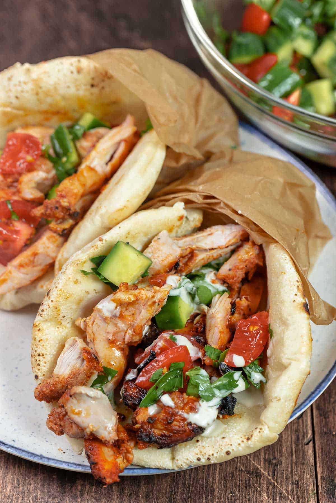

Doner-kebab

Description
Classic döner kebab, et döner, consists of a heavily seasoned mixture of beef and lamb that is pureed into a paste, shaped into a log, and finally slow-roasted for hours on a vertical spit to juicy perfection. (Tail fat is often added to the meat mixture to keep it juicy and moist while it roasts.)
Nowadays chicken doner, or tavuk döner, is just as popular in Turkey. Chicken is similarly seasoned and marinated in a flavorful yogurt-based marinade, then stacked onto a vertical spit and slow roasted.
To serve doner kebab, the outer layer of charred meat goodness is thinly shaved off the spit, using a large, sharp knife, in a top-to-bottom motion. Yes, at that moment, the meat or chicken is meltingly tender and is made even more perfect when you add a warm, pillowy pita and flavorful fixings.
Ingredients
- 1 teaspoon all-purpose flour
- 1 teaspoon dried oregano
- ½ teaspoon salt
- ½ teaspoon garlic powder
- ½ teaspoon onion powder
- ½ teaspoon dried Italian herb seasoning
- ¼ teaspoon ground black pepper
- ¼ teaspoon cayenne pepper
- 1 ¼ pounds ground lamb
Steps
- Preheat the oven to 350 degrees F (175 degrees C).
- Combine flour, oregano, salt, garlic powder, onion powder, Italian seasoning, black pepper, and cayenne pepper in a large bowl. Add ground lamb and knead until thoroughly mixed together, about 3 minutes.
- Shape seasoned lamb mixture and place into a loaf pan; set on top of a baking sheet.
- Bake in the preheated oven, turning halfway to ensure even browning, for about 1 hour and 20 minutes.
- Wrap loaf in aluminum foil and let rest for about 10 minutes. Slice as thinly as possible to make doner kebab pieces.